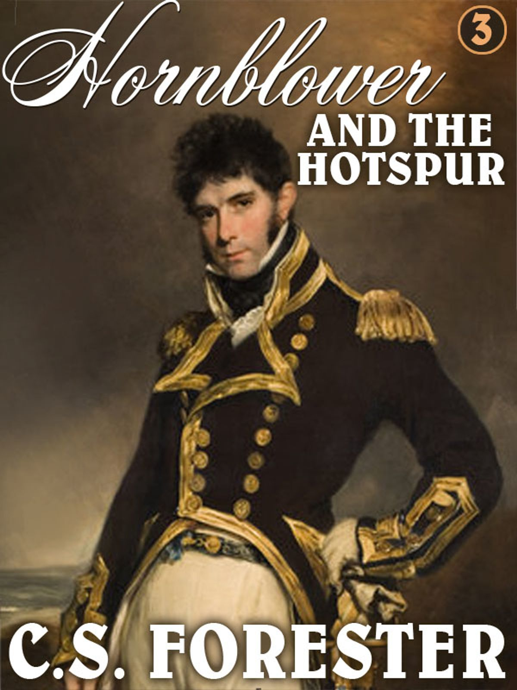
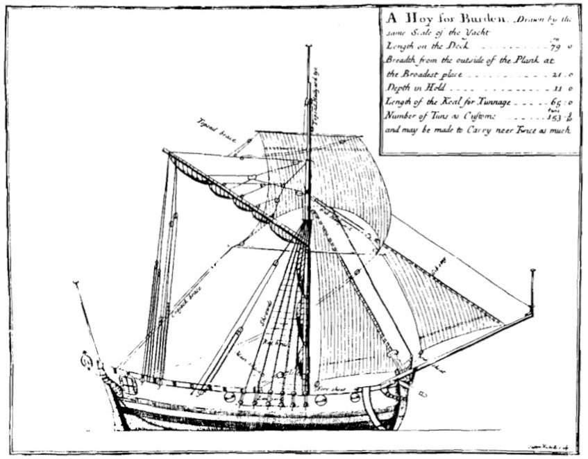
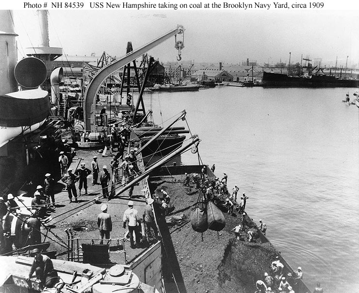
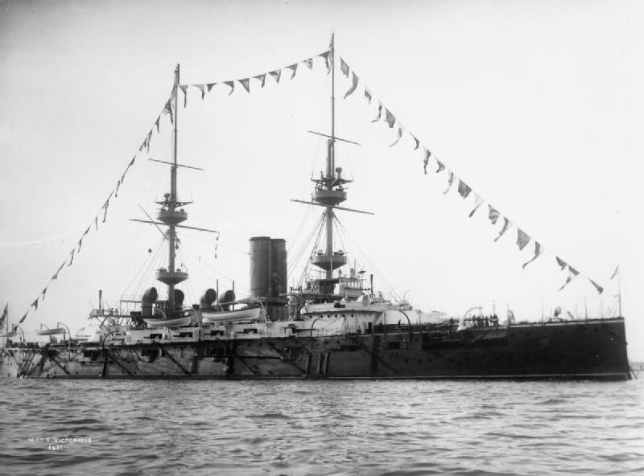
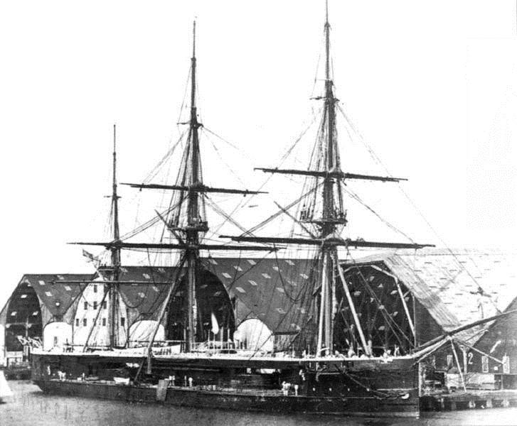
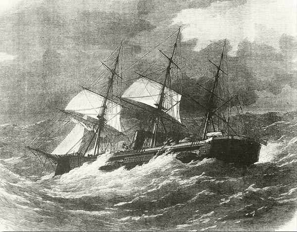
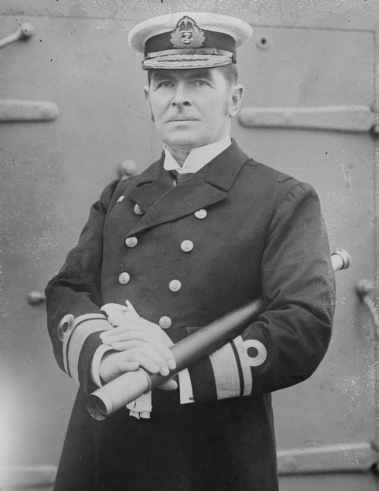

문무대왕함 집단 감염 사태를 계기로 본 해상 보급의 짧은 역사 (1)
게시: 2021-07-29T06:30:04+09:00
나폴레옹 전쟁 당시 영국 해군 장교의 모험담을 그린 소설 시리즈물 중 가장 유명한 것 2가지가 C.S. Forester의 Hornblower 시리즈와 Patrick O'Brian의 Aubrey & Maturin 시리즈입니다. 이 소설들은 영미권에서는 거의 신필 김용선생의 영웅문 시리즈에 해당하는 권위를 갖습니다. 이 두 소설 시리즈의 주인공들인 혼블로워와 오브리는 모두 영국 해군 함장인데, 두 사람은 성격은 완전히 반대지만 공통점이 두가지 있습니다. 하나는 둘 다 홍차가 아니라 커피 애호가라는 점이고, 나머지 하나는 둘 다 함상에서도 목욕하는 것을 좋아한다는 것입니다. 당시 군함에서는 물이 귀했으므로 당연히 두 함장 모두 목욕은 바닷물로 합니다. 아무도 샤워 따위는 하지 않으면서 몇 개월 동안 바다에서 살아야 하는 영국 해군 특성상 주인공들도 몸에서 엄청난 냄새가 났을 것 같고, 실제로 영국 해군 함장들이 목욕을 좋아했을 것 같지 않습니다만, 아마 두 작가들은 자신들의 소중한 주인공들이 그런 냄새나는 아저씨라는 점을 받아들일 수가 없었나 봅니다. 그런데 그렇게 씻지 않는 생활 환경이라면 당시 군함 내부는 굉장히 비위생적인 공간이었을 것 같습니다. 실제로 악취가 많이 났다고 합니다. 그러나 정작 영국 해군 함장들은 군함이 깨끗한 곳이고 항구는 지저분한 곳이라고 생각했습니다. 왜 그랬을까요? 이번 문무대왕함 승조원들의 집단 감염에서 보듯이, 항구에서는 어쩔 수 없이 사람 간의 접촉이 일어날 수 밖에 없고 그러면 정체를 알 수 없는 전염병이 옮겨올 확률이 높아지는데다 벼룩과 이 같은 해충이 꼭 잠입해 들어오기 때문이었습니다.

Hornblower and the Hotspur by C.S. Forester (배경 1802년 프랑스 브레타뉴 반도 앞바다 HMS Hotspur 함상) --------- 이롸즈 해(the Iroise, 프랑스 브레타뉴 반도 서쪽 앞바다)에서 남동풍을 받아 편안하게 정박한 상태로 핫스퍼 호는 식량과 물 등을 보급 받고 있었다. 식수 보급선(water hoy)들로부터 물통을 채우고 식량 보급선(victualler)들로부터 쇠고기통과 돼지고기통을 받아 빈 통과 교체하고, 콘월리스 제독이 취역시킨 순회 잡화선(slop ship)과 흥정하여 온갖 자질구레한 잡화들을 받아내는 등의 이런 고된(laborious) 절차를 거치는 것은 플리머스에서 개장을 한 이후로 이번이 두번째였다. 핫스퍼는 항구에 기항하지 않은 채 6개월째 바다에 나와 있는 상태였고, 이제 3달은 더 있을 수 있게 되었다. 혼블로워는 잡화선이 떨어져 나가는 것을 보면서 뭔가 마음의 부담이 덜어지는 것을 느꼈다. 플리머스에서 핫스퍼 호에 들러붙은 온갖 병치레와 빈대, 벼룩, 이 등을 제거하는데 6개월이라는 시간도 그다지 충분한 편이 아니었다. 그 중에서도 빈대가 최악이었다. 목재 구조물 어느 한 구석에 숨겨져 있던 빈대 소굴을 소탕하면 또 다른 곳에서 발견되곤 했던 것이다. 뱃밥으로 쓰는 삼부스러기(oakum)에 불을 붙여 지져보기도 하고, 페인트를 발라서 막아보기도 하는 등의 노력을 반복했고, 마침내 이 해충들을 박멸했다고 생각할 때 즈음이 되면 꼭 어떤 불운한 수병이 소속 부대 사관을 찾아와 이마에 주먹을 갖다대는 거수경례를 하며 이렇게 말하곤 했다. "저 실례합니다만, 이번에는 제가 걸린 것 같습니다." (Please, sir, I think I've got 'em this time.) -------------------------

(소설 속에 등장하는 water hoy라는 것은 그냥 식수 보급선으로 사용되는 hoy 선을 이야기하는 것인데, hoy라는 것은 돛 1개 짜리의 소형 선박을 이야기하는 것입니다.) 이런 감염병으로부터 승조원들을 보호하기 위한 가장 좋은 방법은 아예 항구에 기항하지 않는 것입니다. 그러나 승조원들도 사람이니 먹고 마셔야 하고, 또 뭍에 내려서 쉬어야 합니다. 그런데 위에서 발췌한 소설 구절처럼, 나폴레옹 전쟁 당시 영국 해군은 프랑스의 주요 항구들을 밀접 봉쇄하느라 거의 1년 가까이 항구에 기항하지 않기도 했습니다. 당시 어떤 제독은 1년 넘게 육지를 밟지 않았고 정말 군함 자기 선실에서 과로와 병마로 인해 죽기도 했습니다. 특히 당시 군함들은 범선이라서 연료가 필요없으므로 현대식 핵추진 군함처럼 언제까지고 바다 위에 떠있을 수 있었습니다. 문제는 핵추진 군함이나 범선이나 모두 물과 식량은 보충을 해야 한다는 점입니다. 저 소설 속에서처럼 해상에서 보급선과 랑데부하여 물과 식량을 받으면 되니까 별로 어려운 일은 아닐 것 같습니다. 과연 그랬을까요? 저 당시의 물과 식량을 보급선에서 옮겨 담는 것은 혼블로워의 표현대로 굉장히 고될 뿐만 아니라 시간이 엄청나게 많이 걸리는 일이었습니다. 하지만 별 상관 없었습니다. 당시는 범선의 시대였고, 적함이 수평선에 나타나더라도 보급품 적재 작업을 중단하고 전투 태세를 갖출 시간은 충분했습니다. 그러나 증기선 시대가 되면서 이야기가 좀 달라졌습니다. 범선과는 달리 증기선은 수병이 럼주 마시듯 석탄을 먹어치웠기 때문에 석탄 보급을 자주 받아야 했습니다. 1만톤급 전함 같은 경우 대략 30~40일마다 2천톤의 석탄을 보급받아야 했는데, 흔들리는 바다 위에서 수병들의 근육에만 의지해서 보급선에서 2천톤의 석탄을 퍼올리고 작은 보트에 싣고 그걸 또 노를 저어 전함에 가져다가 올려싣는 것은 보통 일이 아니었습니다. 힘든 것은 둘째 치고, 시간이 너무 오래 걸렸습니다. 특히 그렇게 석탄을 퍼올리느라 난장판이 된 상태에서 수평선 위로 적함이 나타난다면 이건 보통일이 아니었습니다. 범선 시대와는 달리 적함이 15노트의 속도로 수십 분 안에 포격 사정권 내로 달려올 수 있었기 때문입니다. 수십 분 안에 전투 준비 갖추는 것이 가능하더라도 문제는 여전했습니다. 이쪽이 석탄 적재 작업 중이라는 것을 파악한 적함이 멀리 가지고 않고 다가 오지도 않고 딱 사정거리 바깥쪽에서 어슬렁거리는 것이 가장 큰 문제였습니다. 이쪽 석탄이 다 떨어지기를 참을성있게 기다렸다가 들이치면 그거야말로 난리나는 상황이 되는 것이었거든요. 그래서 과거 혼블로워가 프랑스 연안에서 물과 염장 쇠고기통 옮겨 싣듯이 해상에서 석탄 보급을 받을 수는 없었습니다.

(이 사진은 1909년 경 뉴욕 해군항에서 USS New Hampshire (BB-25)가 석탄을 싣는 장면입니다. 석탄을 쟁여넣는 작업은 당시 전함에서 해야하는 일 중 가장 고되고 지저분한 일이었다고 합니다. 그래서 흔히 석탄 적재에 동원되는 수병들에게는 특별 수당이 지급된다는 이야기가 있을 정도였지만, 그건 사실이 아니라고 합니다. 역시 군대는 그냥 줄서기가 중요하네요.) 하지만 일이 그렇게 되다보니 당장 큰 문제가 발생했습니다. '하얀 돛과 바람만 있으면' 세계 어디나 갈 수 있던 군함들의 항속 거리가 당장 크게 제약을 받았습니다. 뿐만 아니라 바다에 나가 작전할 수 있는 기간도 큰 폭으로 줄어들었습니다. 이런 문제를 해결하기 위해 영국 해군은 전세계 길목마다 자신들을 위한 보급 항구를 건설하여 대응했습니다만, 그것만으로는 충분치 않았습니다. 아무리 전세계에 촘촘하게 석탄 보급항을 깔아놓는다고 해도, 작전 나갔다가 석탄이 떨어질 무렵에 다시 항구에 들어가서 석탄을 보급받자면 항구까지 왔다갔다 하는 시간만으로도 엄청난 비효율이었기 때문이었습니다. 게다가 군함들은 석탄 보급이 가능한 어느어느 항구 근처에서 왔다갔다 할 수 밖에 없으니, 군함의 석탄 선적일에 따라 그 군함의 동선이 대략 예측된다는 문제점까지도 있었습니다. 항구에 들어가서 석탄을 싣는 속도 자체가 군함의 효율성과도 직결되는 중요한 문제였습니다. 항구에서 석탄을 싣는 속도가 빠를 수록 바다에서의 작전 가용 시간이 길어지니까요. 1899년에 St John Daily Sun이라는 매체에 실린 '전함의 석탄 적재 : 영국 해군이 전세계를 주도하는 분야' (Coaling Battleships; A Matter in Which the British Navy Leads the Whole World)라는 기사를 보면 다음과 같은 내용이 나옵니다. "전함에 석탄을 채우는 속도는 시간당 100톤을 약간 상회하는 정도가 평균이라고 믿는다. 이에 관하여, 최근 있었던 크레테 섬 분쟁 동안에 이 섬에 정박했던 여러 국가 소속 함선들의 석탄을 채우는 속도를 제시하는 것이 좋을 것이다. 프랑스 해군은 시간당 30~40톤, 이탈리아는 20톤, 독일, 오스트리아, 러시아는 평균 10톤 정도였다. 우리의 외국 친구들에게는 놀랍게도, 영국 해군은 시간당 100톤을 조금 넘는 속도로 채웠다. 우리 영국 해군이 다른 나라 해군에 비해 가지는 우월함이 여기서 한번 더 드러난 것이다."

(HMS Victorious입니다. 1895년 진수되어 제1차 세계대전에도 연안 수비함 용도로 사용된 1만6천톤짜리 전함입니다. 1906년 이 전함이 1906년 지브랄타에서 석탄을 실을 때 900톤을 시간당 305.4톤의 속도로 적재한 것이 당시 세계 최고 기록이라고 합니다.) 이런 문제를 해결하기 위해서는 혼블로워가 이롸즈 해에서 식수와 염장 쇠고기 보급을 받았던 것처럼 해상에서 석탄 보급을 받아야 했습니다. 그 첫번째 시도는 1870년 도버 해협 함대(Channel Squadron) 소속의 캡틴(HMS Captain) 호가 정말 식수와 염장 쇠고기통을 옮기듯 보트를 이용하여 석탄 해상 보급을 시도한 것입니다. 그 결과는 신통치 않았습니다. 시간당 5톤 정도의 석탄을 옮겨 싣는 것이 고작이었기 때문이었습니다. 확실한 기록은 없습니다만 아마 캡틴 호의 석탄 적재고는 3백톤은 넘었을 것 같은데, 이런 식으로 석탄 재보급을 마치려면 수병들이 지치지 않는다고 해도 60시간이 걸리는 셈이었습니다. 60시간 동안 군함이 멈춘 상태로 있어야 한다는 것도 비상식적인 조건이었지만 무엇보다 60시간 동안 바다가 잔잔한 상태로 있을 리도 없었습니다.

(HMS Captain은 약 7천톤짜리 군함으로서, 보시다시피 돛과 함께 8개의 보일러와 스크루 2개를 가지고 최대 15노트 이상의 속도를 냈던 증기선입니다. 이 정도 크기의 배라면 석탄을 최소 300톤 가량 실었을 것입니다. 이 사진은 캡틴 호가 진수된 진후인 1869년에 찍은 사진입니다.

(불행히도 캡틴 호는 바로 다음해에 스페인 피니에스테르 앞바다에서 폭풍에 휘말려 전복, 침몰했습니다. 이 신형 증기선은 기존 범선과는 달리 수면 위 갑판 높이, 즉 freeboard가 낮았는데, 함장 이하 선원들이 이렇게 낮은 freeboard를 가진 선박의 운용법에 익숙하지 않아 이런 사고를 냈다고 합니다. 이 사고에서 당시 영국 해군의 제1인자에 해당하는 the First Lord of the Admiralty였던 Hugh Childers의 아들을 포함한 480명 정도가 익사했습니다.) 이렇게 해상 석탄 재보급은 불가능한 것으로 치부되었습니다만, 10여년이 지나자 30대 젊은 귀족 출신 해군 장교 하나가 뭔가 새로운 아이디어를 들고 나타납니다. 육군 장군을 아버지로 둔 로우리(Robert Lowry)라는 위관급 장교였습니다.

(이건 로우리가 해군 제독이 된 이후인 1916년의 모습입니다.)
** 분량 조절 실패로 다음 주 목요일에 2편이 이어집니다.
Source : https://en.wikipedia.org/wiki/Hoy_(boat)
https://www.ibiblio.org/hyperwar/OnlineLibrary/photos/sh-usn/usnsh-n/bb25.htm
https://en.wikipedia.org/wiki/Underway_replenishment
https://en.wikipedia.org/wiki/HMS_Captain_(1869)
http://www.regimentalrogue.com/blog/index.blog/2356963/coaling-ship-a-matter-of-pride/
https://en.wikipedia.org/wiki/HMS_Victorious_%281895%29
https://en.wikipedia.org/wiki/Robert_Lowry_(Royal_Navy_officer)